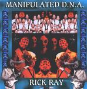

| Artist: | Rick Ray |
| Title: | Manipulated D.N.A. |
| Label: | Neurosis Records |
| Length(s): | 74 minutes |
| Year(s) of release: | 2001 |
| Month of review: | [09/2001] |
| 1) | The Nothing Man | 6.52 |
| 2) | Selling Confusion | 6.37 |
| 3) | Manipulated DNA | 6.35 |
| 4) | Psychonaut | 10.54 |
| 5) | If The Truth Was Told | 4.57 |
| 6) | Flies On Simon | 7.19 |
| 7) | Orangutan Ballet | 3.25 |
| 8) | Requiem For Sanity | 2.12 |
| 9) | Could This Be | 5.15 |
| 10) | Ignorance And Apathy | 5.47 |
| 11) | It's All Too Clear | 3.47 |
| 12) | They'll Never Learn | 5.41 |
| 13) | Ghost Track | 4.52 |
Selling Confusion continues with a bouncy gait takes over and is mostly guitar solo. It sounds rather laid-back and the vocals are vocoded. Typically Ray I think.
The title track is much more exciting. There some real tension here with a strong metal drive on the rhythm guitar. The intermezzo is ethereal and although Ray has not lost his "underground" sound, the sound is better on this album.
Now I guess Ray is not familiar with Twelfth Night's Creepshow, but the riff on Psychonaut shows a similarity nonetheless. The guitar work sounds complex, but the song is a slow moving one. The song has some good atmospheric moments and has more melody than I am used to from Ray. A long track as well.
If The Truth Was Told is a moody one, easy-going psych in which we also hear the clarinet of Schultz. At some point I saw in my mind, a bunch of old psychedelic rockers nodding their heads to the music.
Flies On Simon is again quite psychedelic, but the singing is less good than earlier. Too monotonous. Quite a bit of keys on this one (and some clarinet too but not always soloing the way that it used to be) and surprise some jazziness as well. The clarinet-guitar duel is left to the end.
Orangutan Ballet is a short instrumental followed by another atypical one: Requiem For Sanity is keyboards and effects. Quite a bit of variation and interesting as well. Mid-tempo rock and a meandering clarinet we find on Could This Be.
Ignorance And Apathy is both musically and lyrically a typical Ray song, but It's All Too Clear has some rock 'n' roll in there as well.
They'll never learn opens with some great piano melodies, the rest of the track is somewhat somber. The ghost track is maybe the most proggy of the tracks and has some lots of piano, clarinet and, and this not occur often, melodic acoustic guitar.